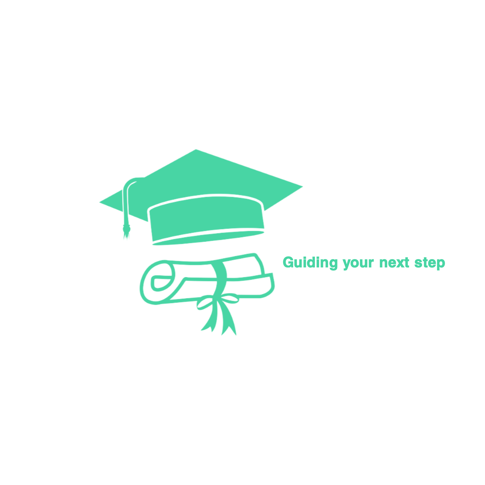

Your Guide to Navigating KMTC Admissions
Securing a spot at the Kenya Medical Training College (KMTC) is a dream for many aspiring healthcare professionals. Here’s how you can successfully navigate the KMTC admissions process:
1. Understand the Requirements
KMTC offers various programs with specific requirements. Review these requirements for your desired course and ensure you meet the minimum qualifications.
2. Gather Necessary Documents
Ensure you have all the required documents, such as KCSE certificates, birth certificates, and a national ID or passport.
3. Submit Your Application
Visit the KMTC online portal and follow the step-by-step application process. Double-check your information before submission.
4. Attend Admission Interviews
If shortlisted, prepare for the KMTC admission interviews. Research common interview questions and practice your responses.
5. Seek Professional Assistance
If you need guidance, Aspire KE is here to assist you with every step of your KMTC application process.